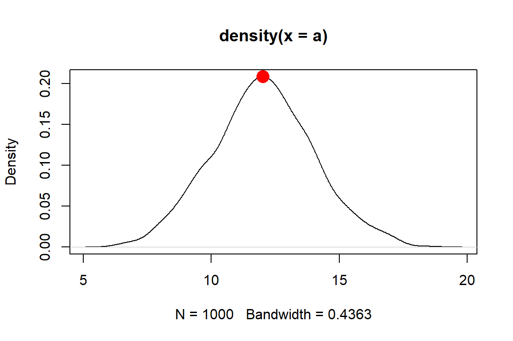

Module 4 Exploratory data analysis 1: Data description and summarization
Sometimes you have to “pre-analyze” your data before you can really analyze it. This is usually called exploratory data analysis (EDA). Exploratory data analysis can reveal unexpected patterns (or problems) in your dataset. This module and the next two will demonstrate some common exploratory processes in R. Along the way we will explore how to summarize data, common data distributions and how to fit them to your data, and how to manage your data to avoid common statistical pitfalls.
The exploratory data analysis unit of this course is split into three modules:
- Module 4 (this module) covers basic descriptive statistics and visualization for single variables.
- Module 5 covers common probability distributions encountered by biologists, and how to find the right distribution to analyze your data.
- Module 6 covers methods for exploring two or more variables at once.
4.1 Motivation
One of the main questions that biologists have after collecting data is, “What statistical test do I use?” Ignoring the fact that they should have thought about that before collecting data, the answer to that question depends on the answers to two other questions:
- What question are you trying to answer?
- What kind of data do you have?
The first question is up to you as a biologist. The second question is more in the realm of statistics, and is the question that exploratory data analysis is the process for answering.
Common objectives in exploratory data analysis include:
- Describing the central tendency and variability of variables
- Identifying potential outliers
- Identifying how variables are distributed
- Testing whether data meet the assumptions of statistical tests
- Checking for common issues such as autocorrelation, collinearity, and missingness.
- Searching for patterns in your data that may or may not be related to your main analysis.
How much exploratory data analysis is needed varies from to project to project. At a minimum, you should be checking to see that your data meet the assumptions of your analysis. Failure to verify that your main analysis is justified can lead to huge problems down the line. Zuur et al. (2010) reviewed a host of common data exploration methods and motivations; although aimed at ecologists, most biologists would benefit from reading their paper.
The exploratory data analysis part of the course is split into three parts:
- In Module 4 (this section), we will explore some common ways to summarize data and present those summaries.
- In Module 5, we will formally introduce probability distributions and how to pick the right distribution for your data.
- In Module 6, we will learn methods for multivariate data exploration, and introduce some basics of plotting in R.
4.2 Descriptive and summary statistics
4.2.1 Basic summary statistics
One of the first steps in exploratory data analysis is understanding how values in a variable are spread out (aka: distributed), and what a “typical” value is. Biologists use a few common summary statistics, or descriptive statistics, to describe individual variables.
4.2.1.1 Central tendency
The central tendency of a variable is a value that represents a “typical” value from that set of values. Central tendency is usually expressed in one of three ways:
Mean: the sum of values divided by the number of values. This value is also called the “arithmetic mean”. Answers the question, “What value would all values be if they were the same?”. When people say “mean” or “average”, this usually what they are referring to. The mean is useful because it is one of the defining features of the normal distribution, a foundational concept in modern statistics.
Median: the middle value, which is greater than half of the values and less than the other half of the values. Also known as the 50th percentile or 0.5 quantile.
Mode: the most common value.
For many datasets, the mean and median will be approximately the same. Data that are skewed will have a median different from their mean. Biologists typically summarize data using the mean, but median can be appropriate in some situations–especially when data are not normally distributed.
4.2.1.1.1 Mean
The arithmetic mean or just mean is the value that all values would be if they were all the same.
The mean of a distribution is often abbreviated with the Greek letter \(\mu\) (“mu”).
It is calculated as the sum of all values in x divided by the number of values n: \[\mu\left(x\right)=\frac{\sum_{i=1}^{n}x}{n}\] The mean is useful because it is part of the definition of the normal distribution, a very important concept in modern statistics.
You can get the mean of a variable in R using the function mean():
# random normal dist. with mean = 5 and sd = 1
x <- rnorm(100, 5, 1)
mean(x)## [1] 5.11826Like many summarization functions in R, mean() does not automatically handle missing values (NA).
If your dataset contains missing values, you need to set the argument na.rm=TRUE.
This can seem like an annoying bug, but it’s actually a feature.
By returning NA when the data contain missing values, R is helping you track down where missing values are coming from (and thus, why your code may not be working at some later point).
x <- c(2, 3, 6, 2, 6, 1, NA)
mean(x)## [1] NAmean(x, na.rm=TRUE)## [1] 3.333333While most poeple only ever use the arithmetic mean, there are other means. The geometric mean is defined as the n-th root of the product of all values:
\[\mu_{geom}\left(x\right)=\sqrt[n]{\prod_{i=1}^{n}x}\]
Or equivalently, the Euler’s constant e raised to the power of the mean of the values on the log42 scale:
\[\mu_{geom}\left(x\right)=exp\left(\frac{1}{n}\sum_{i=1}^{n}\log{\left(x\right)}\right)\]
The geometric mean is sometimes used for values that are meant to be multiplied together, such as growth rates. Another application is in comparative morphology, where the geometric mean of a set of anatomical measurements is used as a sort of overall measure of body size against which individual measurements can be relativized. For example, a morphologist might calculate the geometric mean of 15 skull measurements to arrive at the size of a “hypervolume” which represents skull size. Because of the way that it is defined, the geometric mean is only defined for positive real values.
There is no base function for geometric mean, but it’s easy to get by combining base functions.
# lognormal with logmean 2 and logsd=0.5
x <- rlnorm(2, 2, 0.5)
# custom function for geometric mean:
geomean <- function(x){exp(mean(log(x)))}
geomean(x)## [1] 12.77861# another way:
geomean2 <- function(x){prod(x)^(1/length(x))}
geomean2(x)## [1] 12.77861The harmonic mean is less common than the arithmetic or geometric means. It is used when an average rate is needed. It is calculated as the reciprocal of the arithmetic mean of reciprocals of the values:
\[\mu_{harm}\left(x\right)=\left(\frac{1}{n}\sum_{i=1}^{n}x^{-1}\right)^{-1}\]
An example use case for the harmonic mean is as follows: a migrating bird travels from Atlanta to Knoxville, Tennessee (250 km) at an average speed of 60 km/h, and then from Knoxville to Lexington, Kentucky (230 km) at an average speed of 52 km/h. Its average speed on the trip is not the arithmetic mean of the speeds, but the harmonic mean: \[\mu_{harm}\left(v\right)=\frac{Total\ distance}{Total\ time}=\frac{2}{\frac{1}{60}+\frac{1}{52}}\approx55.7\ km/h\]
I’m not aware of a base function for harmonic means, but it is easy to get:
# only defined for postive real values
a <- rlnorm(20, 3, 1)
# custom function to get harmonic mean
har.mean <- function(x){1/(mean(1/x))}
# compare mean, geometric mean, and harmonic mean:
mean(a)
## [1] 32.40134
geomean(a)
## [1] 20.07604
har.mean(a)
## [1] 7.422123Interestingly, for any set of values with at least 2 unique values the following inequality will always be true:
\[\mu_{arith}\left(x\right)>\mu_{geom}\left(x\right)>\mu_{harm}\left(x\right)\]
4.2.1.1.2 Weighted means
Sometimes we need to count some observations more than others. The weight of an observation is the amount that it contributes to a statistic or analysis. A weighted mean is useful when some observations represent more data or experimental units. For example, when trying to calculate the mean mass of elephants across multiple populations, it might make sense to calculate the mean of the population-level means, but weight the population means by the number of elephants measured in each population. This would be done because the populations with more measurements represent more data, and thus give us greater confidence about what the true mean might be.
The R function for the weighted mean takes a set of values x and weights w.
The weights must add up to 1.
# make some values
x <- c(14, 3, 5, 4)
# weights
wts <- c(10, 1, 1, 2)/14
# compare mean to weighted mean
mean(x)
## [1] 6.5
weighted.mean(x, wts)
## [1] 11.142864.2.1.1.3 Median
The median is the central value of a set of values. If you were to rank the values from smallest to largest, the median would be the value in the middle (or, if there were an even number of values, the median would be the mean of the two central values). The median is also known as the 50th percentile, or 0.5 quantile. The median is sometimes a more useful measure of central tendency than the mean when data are strongly skewed.
A classic use case is personal income. In 2020, the median household income was about $67000. It’s hard to find exact numbers, but at one point in 2020 Jeff Bezos had made about $13 billion since 2019. This implies that in a room with 99 “average” Americans and 1 Jeff Bezos, the mean income was about $130 million. Is that a good representation of what most households made? Of course not. The median would be about $67000.
The easiest way to get the median in R is with the median() function.
You can also use quantile() with argument probs (the second argument) set to 0.5.
x <- rnorm(100)
median(x)
## [1] 0.1006929
quantile(x, 0.5)
## 50%
## 0.10069294.2.1.1.4 Mode
The mode is the most common value in a set of values. For many distributions, the mode will be the same as, or close to, the mean and median. There is no base function to get the mode, but it can be obtained by combining base functions.
set.seed(123)
a <- sample(1:8, 20, replace=TRUE)
# simple function for mode
# Will return >1 result if >1 mode.
# Capitalized because already a function called "mode" that
# does something else and don't want to overwrite it
Mode <- function(x){
un <- sort(unique(x))
ta <- table(x)
mx <- max(ta)
return(un[which(ta==mx)])
}
Mode(a)## [1] 3# illustration with 2 modes:
b <- c(4,4,4,3,3,3,2,1)
Mode(b)## [1] 3 4Another way to get the mode is to find peaks on a probability density plot. We’ll discuss these plots later, but for now, a density plot shows how likely different values are a distribution. This method might be more useful when there are many values, or the values have a great deal of precision, making it hard to find a mode by counting up occurrences.
In the example below, the distribution has a peak around \(x=12.01\). This means that the mode is about 12.01, which is very close to the mean and median as well as the true mean used to generate the distribution.
set.seed(123)
a <- rnorm(1e3, 12, 2)
den <- density(a)
plot(den)
points(den$x[which.max(den$y)], max(den$y),
pch=16, col="red", cex=2)# function to estimate mode
Mode2 <- function(x){
de <- density(x)
return(de$x[which.max(de$y)])
}
Mode2(a)## [1] 12.0136The function we made, Mode2(), works well enough if there is only one mode.
But, many real life distributions have >1 mode.
Such distributions are called bimodal if they have 2 modes, or multimodal if they have 3 or more.
A classic example of bimodality is grades in college courses: it is very common to have many Bs, and many Ds, but not many Fs, Cs, or As.
If your data appear to have >1 mode, you can estimate them by finding points where the slope of the density plot changes sign. The code below is inelegant but it works.
set.seed(123)
a1 <- rnorm(1e2, 12, 2)
a2 <- rnorm(1e2, 20, 2)
a <- c(a1, a2)
den <- density(a)
# shows bimodal distribution:
plot(den)
# function to find peaks on density plot
# i.e., where slope changes from positive to negative
Mode3 <- function(x){
de <- density(x)
dif <- diff(de$y)
flag <- numeric(length(dif))
for(i in 2:length(dif)){
if(dif[i-1] >= 0 & dif[i] < 0){flag[i] <- 1}
}#i
return(de$x[which(flag==1)])
}
Mode3(a)## [1] 12.03519 19.55226abline(v=Mode3(a), lwd=2, col="red")
4.2.1.2 Variability
4.2.1.2.1 Variance and its relatives
The classical way to express the variability in a dataset is as the variance. Variance is usually denoted as \(\sigma^2\) (“sigma squared”) or Var. The variance is defined as the expected (mean) squared deviation from the mean:
\[\sigma^2\left(x\right)=\frac{1}{n}\sum_{i=1}^{n}\left(x_i-\mu\right)^2\]
Like the mean \(\mu\), the variance \(\sigma^2\) is part of the definition of the normal distribution and so it shows up a lot in statistics. The differences between each value \(x_i\) and the mean are squared for two reasons: first, so that positive and negative deviations do not cancel out (because the square of any real number is positive); and second, so that greater deviations count more than small deviations. The main drawback of the variance is that it is in squared units of the original values. For example, the variance of a set of measurements taken in cm will be in units of cm2. For this reason, the variance is often expressed as its square root, the standard deviation (SD). The SD is usually denoted \(\sigma\) (“sigma”) and is defined as:
\[\sigma\left(x\right)=\sqrt{\sigma^2\left(x\right)}\]
Because the SD is the square root of the variance, it is in the same units as the original measurements (and thus, the mean). This makes SD easier to interpret than the variance.
The coefficient of variation (CV) is the ratio of the SD to the mean. Some people prefer CV to SD because it allows comparisons between variables with very different means or SD. CV can be expressed as ratios or as percentages. Whichever you use, just be clear about what you did.
set.seed(123)
# different SD, same CV:
a <- rnorm(1000, 4, 2)
b <- rnorm(1000, 20, 10)
# function for CV:
cv <- function(x, pct=TRUE){
res <- sd(x)/mean(x)
if(pct){
return(100*res)
} else {
return(res)
}
}
sd(a)
## [1] 1.98339
cv(a) # as percent
## [1] 49.1881
cv(a, FALSE) # as ratio
## [1] 0.491881
sd(b)
## [1] 10.09674
cv(b) # as percent
## [1] 49.43409
cv(b, FALSE) # as ratio
## [1] 0.4943409Another statistic related to the variance is the standard error (SE), sometimes also called the “standard error of the mean (SEM)”.
There is no built-in function for standard error (SE) so it must be calculated using the sample size (function length()).
Note that you should almost never compute and report SE because SD is more appropriate in almost every situation.
The SE is a statement of uncertainty about a mean, whereas SD is a statement about variability among values.
If you insist on calculating SE, here is how:
a <- rnorm(50)
var(a)
## [1] 0.8029621
sd(a)
## [1] 0.8960815
sqrt(var(a)) # equivalent to sd(a)
## [1] 0.8960815
# standard error of the mean
sd(a)/sqrt(length(a))
## [1] 0.1267251Again, you almost certainly should not calculate a SE.
An alternative statistic called median absolute deviation (MAD) expresses variation as absolute deviations from the median rather than squared deviations from the mean. The MAD is useful when data do not follow a normal distribution, or any of the many bell-shaped distributions. The MAD is also considered more robust to outliers than the SD. “Robust” in this context means “not as influenced by outliers”. The MAD is similar to the interquartile range (see below).
The MAD can be obtained with the R function mad().
x <- rlnorm(100, 5, 1)
mad(x)
## [1] 92.2208
# compare to:
sd(x)
## [1] 143.2264.2.1.2.2 Quantiles and ranges
Function range() reports the minimum and maximum values in a vector.
Like many of the functions for descriptive statistics, this function does not handle missing (NA) values by default.
The argument na.rm=TRUE must be set if there are missing values.
range(iris$Petal.Length)
## [1] 1.0 6.9
# illustration of working with missing values
x <- c(rnorm(20), NA)
range(x)
## [1] NA NA
range(x, na.rm=TRUE)
## [1] -2.256535 1.714763Quantiles of data are calculated using the function quantile().
A quantile is a value in a distribution or sample such that some specified proportion of observations are less than or equal to that value.
For example, the 0.5 quantile is the value such that half of values are less than or equal to that value.
Quantiles are usually expressed either as proportions in [0, 1] or as percentiles in [0, 100].
R uses proportions, but you can always multiply by 100 to get percentiles.
Special quantiles are also available as their own functions: minimum min(), median median(), maximum max(), and interquartile range IQR().
Remember that argument na.rm is needed for many of these functions if there are missing values!
a <- rnorm(50)
# 20th percentile (aka: 1st quintile)
quantile(a, probs=0.2)
## 20%
## -0.6203262
# 75th percentile (aka: 3rd quartile)
quantile(a, probs=0.75)
## 75%
## 0.6651086
# 2.5 and 97.5 percentiles
# (i.e. 95% CI of a normal distribution)
quantile(a, probs=c(0.025, 0.975))
## 2.5% 97.5%
## -1.663476 1.706863
# minimum, or 0th percentile
min(a)
## [1] -1.948787
# maximum, or 100th percentile
max(a)
## [1] 2.281967
# interquartile range (75th – 25th percentile)
IQR(a)
## [1] 1.220554
# demonstration of na.rm
b <- c(a, NA)
min(b)
## [1] NA
min(b,na.rm=TRUE)
## [1] -1.948787If you are using the median to summarize a set of values, it is probably more appropriate to report their variability using the interquartile range (IQR) rather than the SD. This will likely come up with data that are right-skewed. Such data are often normally distributed on the log scale, but log-scale summary statistics aren’t very useful for a reader. Notice in the figure below how the mean and median differ.
4.2.1.2.3 Useful functions in R
You can get a quick numerical summary of a vector or a dataset with summary().
The examples below use the built-in dataset iris.
summary(iris)## Sepal.Length Sepal.Width Petal.Length Petal.Width
## Min. :4.300 Min. :2.000 Min. :1.000 Min. :0.100
## 1st Qu.:5.100 1st Qu.:2.800 1st Qu.:1.600 1st Qu.:0.300
## Median :5.800 Median :3.000 Median :4.350 Median :1.300
## Mean :5.843 Mean :3.057 Mean :3.758 Mean :1.199
## 3rd Qu.:6.400 3rd Qu.:3.300 3rd Qu.:5.100 3rd Qu.:1.800
## Max. :7.900 Max. :4.400 Max. :6.900 Max. :2.500
## Species
## setosa :50
## versicolor:50
## virginica :50
##
##
## summary(iris$Petal.Length)## Min. 1st Qu. Median Mean 3rd Qu. Max.
## 1.000 1.600 4.350 3.758 5.100 6.9004.2.2 Summarizing by groups (AKA: pivot tables)
4.2.2.1 aggregate() and tapply()
One of the most common data operations is aggregation, or summarization by groups.
In Excel, this is done using Pivot Tables.
In R, the functions aggregate() and tapply() are used for pivot table-like functionality.
The tidyverse equivalent for aggregate() and tapply() is dplyr::summarise().
All of these can be much more powerful than an Excel pivot table (below).
4.2.2.1.1 aggregate()
The most important inputs to aggregate() are the data to be summarized, the variable or variables that define the groups, and the function by which to summarize.
The examples below shows how to calculate the mean petal length for each species in the iris dataset.
If the variable to be summarized and the grouping variables are in the same data frame (which is usually the case), you can use the formula interface to aggregate(); otherwise, use the by= interface.
# example using by=
aggregate(iris$Petal.Length,
by=list(iris$Species),
mean)## Group.1 x
## 1 setosa 1.462
## 2 versicolor 4.260
## 3 virginica 5.552# better method using formula
aggregate(Petal.Length~Species,
data=iris,
mean)## Species Petal.Length
## 1 setosa 1.462
## 2 versicolor 4.260
## 3 virginica 5.552The formula interface is cleaner and easier than the by= interface (first example), and has the key advantage that it automatically passes variable names to the result.
If you use by= you may want to rename the columns in the result.
In my own code I prefer to name my aggregation tables agg, with additional parts like agg1, agg.fish, and so on if needed.
Function aggregate() produces a data frame with a column for each grouping variable (Group.1, Group.2 and so on) and a single column x containing the summarized values.
We can use this property to construct tables that summarize by more than one variable.
x <- iris
# add another grouping variable
x$color <- c("red", "white")
# by= example: notice how columns in result need to be renamed
agg <- aggregate(x$Petal.Length,
by=list(x$Species, x$color),
mean)
agg## Group.1 Group.2 x
## 1 setosa red 1.456
## 2 versicolor red 4.308
## 3 virginica red 5.564
## 4 setosa white 1.468
## 5 versicolor white 4.212
## 6 virginica white 5.540# change column names
names(agg) <- c("spp", "color", "mean")
agg## spp color mean
## 1 setosa red 1.456
## 2 versicolor red 4.308
## 3 virginica red 5.564
## 4 setosa white 1.468
## 5 versicolor white 4.212
## 6 virginica white 5.540# formula example: much easier
agg <- aggregate(Petal.Length~Species+color, data=x, mean)
agg## Species color Petal.Length
## 1 setosa red 1.456
## 2 versicolor red 4.308
## 3 virginica red 5.564
## 4 setosa white 1.468
## 5 versicolor white 4.212
## 6 virginica white 5.540Notice that in agg the values are sorted by the grouping variables from right to left: in this example, by color, then Species.
This is the reverse of the order in the original command.
The result of aggregate() is a data frame, so data within it can be rearranged using order().
Often we want to summarize a variable by multiple functions–for example, to get a table with the mean and SD in each group.
My preferred way to do this is to use several aggregate() commands, and then combine the results.
The examples below shows two ways to construct a table with the mean and SD of a variable.
# define a formula and save some typing:
f1 <- formula(Petal.Length~Species)
# method 1: single table using formula
agg <- aggregate(f1, data=x, mean)
agg$sd <- aggregate(f1, data=x, sd)$Petal.Length
names(agg)[which(names(agg) == "Petal.Length")] <- "mn"
agg## Species mn sd
## 1 setosa 1.462 0.1736640
## 2 versicolor 4.260 0.4699110
## 3 virginica 5.552 0.5518947The $Petal.Length on the end of aggregate() is important because we want only column Petal.Length of the output.
Without $Petal.Length, the result will be messy when we try to add it to agg.
If you ever want to do this with the by= method, the column of the output containing the summarized values will be named x.
# method 1a: single table, using by=
agg <- aggregate(iris$Petal.Length, by=list(iris$Species), mean)
## note use of $x:
agg$sd <- aggregate(iris$Petal.Length, by=list(iris$Species), sd)$x
# change names in result:
names(agg)[which(names(agg) == "x")] <- "mn"
names(agg)[which(names(agg) == "Group.1")] <- "species"
agg## species mn sd
## 1 setosa 1.462 0.1736640
## 2 versicolor 4.260 0.4699110
## 3 virginica 5.552 0.5518947The second approach is to make several aggregate() tables, and combine them into a single result.
# method 2: multiple tables
# (note: there are lots of ways to do this)
agg.mn <- aggregate(f1, data=x, mean)
agg.sd <- aggregate(f1, data=x, sd)
agg <- data.frame(agg.mn, sd=agg.sd$Petal.Length)
names(agg)[2] <- "mn"
agg## Species mn sd
## 1 setosa 1.462 0.1736640
## 2 versicolor 4.260 0.4699110
## 3 virginica 5.552 0.55189474.2.2.1.2 tapply()
The base function tapply(), like aggregate(), summarizes a numeric variable by a grouping variable.
In fact, aggregate() uses tapply() internally.
The difference is that while aggregate() returns a data frame, tapply() returns an array with number of dimensions equal to the number of grouping variables.
The inputs are a vector to be summarized, a grouping variable or set of variables, and the function by which to summarize.
# spare copy
x <- iris
# add some extra grouping variables
x$color <- c("red", "white")
x$treat <- letters[1:3]
# tapply by 1, 2, or 3 variables:
tapply(x$Petal.Length, x$Species, mean)## setosa versicolor virginica
## 1.462 4.260 5.552tapply(x$Petal.Length, x[,c("Species", "color")], mean)## color
## Species red white
## setosa 1.456 1.468
## versicolor 4.308 4.212
## virginica 5.564 5.540tapply(x$Petal.Length, x[,c("Species", "color", "treat")], mean)## , , treat = a
##
## color
## Species red white
## setosa 1.5000 1.475000
## versicolor 4.3875 4.033333
## virginica 5.4250 5.712500
##
## , , treat = b
##
## color
## Species red white
## setosa 1.375000 1.444444
## versicolor 4.362500 4.300000
## virginica 5.644444 5.312500
##
## , , treat = c
##
## color
## Species red white
## setosa 1.487500 1.487500
## versicolor 4.188889 4.325000
## virginica 5.612500 5.588889# vary the arrangement of groups:
tapply(x$Petal.Length, x[,c("color", "Species")], mean)## Species
## color setosa versicolor virginica
## red 1.456 4.308 5.564
## white 1.468 4.212 5.540Personally, I prefer aggregate() to tapply() because it is usually more convenient to have the results in a data frame.
4.2.2.2 Summarizing by arbitrary functions
If you’ve ever used Excel Pivot Tables, you will have noticed that data can only be summarized by a limited set of functions.
On the other hand, aggregate() (and tapply(), but we’ll focus on aggregate()) can be used with pretty much any function that takes in a vector and returns a scalar.
You can even write your own functions!
Below are some examples.
Notice in the first example that arguments to the summarizing function follow its name.
# first quartile (25th percentile)
aggregate(Petal.Length~Species, data=iris, quantile, 0.25)## Species Petal.Length
## 1 setosa 1.4
## 2 versicolor 4.0
## 3 virginica 5.1# number of values
aggregate(Petal.Length~Species, data=iris, length)## Species Petal.Length
## 1 setosa 50
## 2 versicolor 50
## 3 virginica 50The following examples illustrate anonymous functions: functions defined within another function and never defined in the R workspace.
The x in function(x) is taken to be the values within each group defined by the variable(s) on the right-hand side of ~ or in by=.
Notice that the end of such a command will need a lot of ), }, and sometimes ].
Using an editor with syntax highlighting is very helpful!
# number of missing values
aggregate(Petal.Length~Species,
data=iris,
function(x){length(which(is.na(x)))})## Species Petal.Length
## 1 setosa 0
## 2 versicolor 0
## 3 virginica 0# number of non-missing values
aggregate(Petal.Length~Species,
data=iris,
function(x){length(which(!is.na(x)))})## Species Petal.Length
## 1 setosa 50
## 2 versicolor 50
## 3 virginica 50# number of values >= 2
aggregate(Petal.Length~Species,
data=iris,
function(x){length(which(x >= 2))})## Species Petal.Length
## 1 setosa 0
## 2 versicolor 50
## 3 virginica 50# number of UNIQUE values >= 2
aggregate(Petal.Length~Species,
data=iris,
function(x){length(unique(x[which(x >= 2)]))})## Species Petal.Length
## 1 setosa 0
## 2 versicolor 19
## 3 virginica 20Being able to use almost any function, and to define your own functions, makes aggregate() an immensely powerful tool to have in your R toolbox.
4.2.3 Summarizing data with the apply() family
The apply() family is a group of functions that operate over the dimensions of an object.
You can use the apply() family to summarize across rows or columns, or across elements of a list, and so on.
The function used most often is apply(), which works on data frames, matrices and arrays.
There are also lapply(), which works on lists and returns a list; sapply(), which operates on lists and returns the simplest object possible; and many others.
We already saw tapply(), which works on subsets of a data frame or array.
4.2.3.1 apply() for arrays and data frames
Function apply() works on arrays and data frames with \(\ge\) 2 dimensions.
Its arguments are the object to be operated on, the margin (or dimension) on which to operate, and the operation (or function).
The first margin is rows, the second is columns, and so on.
The result of apply() will always have one fewer dimension than the input.
Some typical apply() commands are demonstrated below:
# test dataset with only numeric values
x <- iris[,1:4]
# margin 1 = rows --> row sums
apply(x, 1, sum)## [1] 10.2 9.5 9.4 9.4 10.2 11.4 9.7 10.1 8.9 9.6 10.8 10.0 9.3 8.5 11.2
## [16] 12.0 11.0 10.3 11.5 10.7 10.7 10.7 9.4 10.6 10.3 9.8 10.4 10.4 10.2 9.7
## [31] 9.7 10.7 10.9 11.3 9.7 9.6 10.5 10.0 8.9 10.2 10.1 8.4 9.1 10.7 11.2
## [46] 9.5 10.7 9.4 10.7 9.9 16.3 15.6 16.4 13.1 15.4 14.3 15.9 11.6 15.4 13.2
## [61] 11.5 14.6 13.2 15.1 13.4 15.6 14.6 13.6 14.4 13.1 15.7 14.2 15.2 14.8 14.9
## [76] 15.4 15.8 16.4 14.9 12.8 12.8 12.6 13.6 15.4 14.4 15.5 16.0 14.3 14.0 13.3
## [91] 13.7 15.1 13.6 11.6 13.8 14.1 14.1 14.7 11.7 13.9 18.1 15.5 18.1 16.6 17.5
## [106] 19.3 13.6 18.3 16.8 19.4 16.8 16.3 17.4 15.2 16.1 17.2 16.8 20.4 19.5 14.7
## [121] 18.1 15.3 19.2 15.7 17.8 18.2 15.6 15.8 16.9 17.6 18.2 20.1 17.0 15.7 15.7
## [136] 19.1 17.7 16.8 15.6 17.5 17.8 17.4 15.5 18.2 18.2 17.2 15.7 16.7 17.3 15.8# margin 2 = columns --> column sums
apply(x, 2, sum) # 2 = columns## Sepal.Length Sepal.Width Petal.Length Petal.Width
## 876.5 458.6 563.7 179.9The first apply() command above calculates the sum of values in each row (margin 1) of its input x.
The second apply() command calculates the sum of values in each column (margin 2).
The results are vectors whose lengths are the same as the corresponding dimension of the input (number of rows or columns).
The first commmand above is equivalent to:
y <- numeric(nrow(x))
for(i in 1:nrow(x)){y[i] <- sum(x[i,])}
# verify that results are the same:
all(apply(x, 1, sum) == y)## [1] TRUEBelow are some examples of calculations you can do with the apply() function.
Notice that when the function to be applied takes its own arguments, those arguments are supplied following the function name, in the same order as they would be supplied to the function if used outside of apply().
# column minima
apply(x, 2, min)
## Sepal.Length Sepal.Width Petal.Length Petal.Width
## 4.3 2.0 1.0 0.1
# 75th percentile of each column
apply(x, 2, quantile, 0.75)
## Sepal.Length Sepal.Width Petal.Length Petal.Width
## 6.4 3.3 5.1 1.8
# interquartile range of each row
apply(x, 1, IQR)
## [1] 2.800 2.375 2.550 2.300 2.850 2.900 2.575 2.625 2.175 2.400 2.950 2.500
## [13] 2.375 2.475 3.500 3.500 3.200 2.775 2.925 2.925 2.575 2.825 3.050 2.350
## [25] 2.275 2.250 2.500 2.750 2.750 2.325 2.275 2.675 3.225 3.425 2.375 2.700
## [37] 2.975 2.850 2.325 2.650 2.825 1.800 2.475 2.525 2.600 2.325 2.875 2.450
## [49] 2.925 2.625 2.525 2.200 2.700 2.325 2.600 2.375 2.225 1.650 2.600 1.850
## [61] 2.125 2.000 2.600 2.525 1.600 2.300 2.150 2.250 2.900 2.175 2.225 2.100
## [73] 3.000 2.650 2.325 2.350 2.850 2.750 2.325 1.850 2.150 2.100 2.050 2.900
## [85] 2.100 1.925 2.500 2.825 1.900 2.175 2.425 2.375 2.200 1.750 2.200 2.025
## [97] 2.075 2.275 1.375 2.075 2.975 2.775 3.425 3.150 3.175 4.075 2.300 3.925
## [109] 3.700 3.050 2.550 3.075 3.050 2.800 2.575 2.600 3.050 3.550 4.575 3.225
## [121] 3.025 2.475 4.350 2.775 2.950 3.450 2.600 2.500 3.175 3.500 3.850 3.425
## [133] 3.150 2.925 3.425 3.675 2.625 2.950 2.400 2.925 2.950 2.650 2.775 3.150
## [145] 2.850 2.750 2.975 2.775 2.475 2.600Arrays with >2 dimensions can have functions applied across multiple dimensions:
# object with 3 rows, 2 columns, and 3 "layers":
x <- array(1:18, dim=c(3,2,3))
# how many dimensions does the result have?
apply(x, c(1,2), sum)## [,1] [,2]
## [1,] 21 30
## [2,] 24 33
## [3,] 27 36You can also write custom functions and apply them to rows or columns.
Below are some useful functions to apply.
These functions can be defined inside apply() or outside apply().
Each of the functions below takes an input called x, but this is not as the x that is the input to apply().
The x in function(x) is used inside the braces {} as the name for the input passed from apply() to the inner function.
x <- iris[,1:4]
# count values > 2
apply(x, 2, function(x){length(which(x > 2))})
## Sepal.Length Sepal.Width Petal.Length Petal.Width
## 150 149 100 23
# count missing (NA) values
apply(x, 2, function(x){length(which(is.na(x)))})
## Sepal.Length Sepal.Width Petal.Length Petal.Width
## 0 0 0 0
# count non-missing values
count.nonmissing <- function(x){length(which(!is.na(x)))}
apply(x, 2, count.nonmissing)
## Sepal.Length Sepal.Width Petal.Length Petal.Width
## 150 150 150 1504.2.3.2 lapply() and sapply() for lists and other objects
The other members of the apply() family that are most often used are lapply() and sapply().
lapply(), operates on lists and returns a list. Short for “list apply”, and usually pronounced “el apply” (or maybe “lap-lie”).sapply()operates on many object types (including lists) and returns the simplest object possible. Short for “simplify apply”, and usually pronounced “ess apply” or “sap-lie”. Usually the goal withsapply()is to get a vector or matrix out of a list.
The code block below makes a list called mylist and illustrates the use of lapply() and sapply().
mylist <- vector("list", 5)
for(i in 1:length(mylist)){
x <- rnorm(20)
mylist[[i]] <- t.test(x)
}#i
# get estimated mean of each element of mylist, in a list
lapply(mylist, function(x){x$estimate})## [[1]]
## mean of x
## 0.2532857
##
## [[2]]
## mean of x
## 0.24109
##
## [[3]]
## mean of x
## 0.03012403
##
## [[4]]
## mean of x
## 0.03754321
##
## [[5]]
## mean of x
## 0.03765989# get estimated mean of each element, simplified to vector
sapply(mylist, function(x){x$estimate})## mean of x mean of x mean of x mean of x mean of x
## 0.25328572 0.24109003 0.03012403 0.03754321 0.03765989The function lapply() can sometimes be combined with do.call() to produce similar outputs as sapply():
do.call(c, lapply(mylist, function(x){x$estimate}))## mean of x mean of x mean of x mean of x mean of x
## 0.25328572 0.24109003 0.03012403 0.03754321 0.03765989Clever use of lapply() and sapply() can save you a lot of time and typing.
Interestingly, using these functions can make base R code feel a lot like tidyverse code, in the sense that commands are issued as functions with much less focus on manipulating objects.
4.2.4 Tabulation (frequency tables)
Aggregation is summarizing numeric variables by group. The equivalent for non-numeric variables is tabulation. A lot of tabulation is just counting. R can do a lot of counting for you.
4.2.4.1 table() to count occcurrences
The table() function tallies the occurrences of each unique value in a vector.
Notice that table() only returns a result for the values that actually occur in the input.
aa <- rpois(50,10) # Random Poisson distribution
table(aa)## aa
## 4 5 6 7 8 9 10 11 12 13 14 16 17 20
## 1 3 3 5 7 5 9 5 3 2 4 1 1 1If you need a count that includes 0s for missing values, there are a few ways to do this.
My preferred solution is to use the custom function below.
This function counts how many times each value in values occurs in input.
table.all <- function(input, values){
res <- sapply(values,
function(x){length(which(input == x))})
names(res) <- as.character(values)
return(res)
}
# use with random poisson values:
x1 <- rpois(20, 10)
table.all(x1, 0:30)## 0 1 2 3 4 5 6 7 8 9 10 11 12 13 14 15 16 17 18 19 20 21 22 23 24 25
## 0 0 0 0 0 1 1 4 1 1 0 5 2 2 1 0 1 0 0 0 1 0 0 0 0 0
## 26 27 28 29 30
## 0 0 0 0 0# compare to:
table(x1)## x1
## 5 6 7 8 9 11 12 13 14 16 20
## 1 1 4 1 1 5 2 2 1 1 1If you plot a table() result, you get a sort of bar graph.
This is similar to what you get with a command like plot(...,type = "h")43.
plot(table(aa))4.2.4.2 ftable() for contingency tables
Contingency tables, or frequency tables summarize how many observations occur in combinations of categories.
They are calculated with ftable().
This function counts the number of values in each combination of different factors.
The example below uses the built-in dataset iris modified to have some additional factors.
set.seed(123)
x <- iris
x$color <- c("purple", "white")
x$bloom <- sample(c("early", "late"), nrow(x), replace=TRUE)
handed.table <- ftable(x$color~x$bloom)
handed.table## x$color purple white
## x$bloom
## early 39 37
## late 36 38Contingency tables produced by ftable() can be used directly for chi-squared (\(\chi^2\)) tests:
chisq.test(handed.table)##
## Pearson's Chi-squared test with Yates' continuity correction
##
## data: handed.table
## X-squared = 0.026671, df = 1, p-value = 0.8703The function ftable() also has a formula interface, much like many statistical functions (e.g., lm()).
This is useful if you want more complicated tables or more combinations of categories.
Notice that the order of variables affects the structure of the resulting table.
The 6 commands below produce equivalent tables, but the results are organized differently.
ftable(Species~color+bloom, data=x)## Species setosa versicolor virginica
## color bloom
## purple early 17 13 9
## late 8 12 16
## white early 13 14 10
## late 12 11 15ftable(Species~color+bloom, data=x)## Species setosa versicolor virginica
## color bloom
## purple early 17 13 9
## late 8 12 16
## white early 13 14 10
## late 12 11 15ftable(Species~bloom+color, data=x)## Species setosa versicolor virginica
## bloom color
## early purple 17 13 9
## white 13 14 10
## late purple 8 12 16
## white 12 11 15ftable(color~Species+bloom, data=x)## color purple white
## Species bloom
## setosa early 17 13
## late 8 12
## versicolor early 13 14
## late 12 11
## virginica early 9 10
## late 16 15ftable(color~bloom+Species, data=x)## color purple white
## bloom Species
## early setosa 17 13
## versicolor 13 14
## virginica 9 10
## late setosa 8 12
## versicolor 12 11
## virginica 16 15ftable(bloom~color+Species, data=x)## bloom early late
## color Species
## purple setosa 17 8
## versicolor 13 12
## virginica 9 16
## white setosa 13 12
## versicolor 14 11
## virginica 10 15ftable(bloom~Species+color, data=x)## bloom early late
## Species color
## setosa purple 17 8
## white 13 12
## versicolor purple 13 12
## white 14 11
## virginica purple 9 16
## white 10 15Variables on the left side of the ~ will be on the top of the table, and variables on the right side of the ~ will be on the left side of the table.
On each side, variables are ordered in reverse order from the table matrix outwards.
I can never remember how this works, so usually just have to tinker with the code until I get the table I want.
Compare the results of these commands:
ftable(Species~color+bloom, data=x)## Species setosa versicolor virginica
## color bloom
## purple early 17 13 9
## late 8 12 16
## white early 13 14 10
## late 12 11 15ftable(Species~bloom+color, data=x)## Species setosa versicolor virginica
## bloom color
## early purple 17 13 9
## white 13 14 10
## late purple 8 12 16
## white 12 11 15The output of ftable() is of class ftable, which looks like a matrix or data frame but does not function like one.
Sometimes it is necessary to convert an ftable() output to different class in order to pull values from it.
This can be done with base R conversion functions.
Notice that the data frame form of handed.table resembles the “long” data format we discussed in module 3.
handed.table <- ftable(x$Species~x$color)
as.matrix(handed.table)## x$Species
## x$color setosa versicolor virginica
## purple 25 25 25
## white 25 25 25handed.df <- as.data.frame(handed.table)
names(handed.df) <- c("color", "species", "freq")
handed.df## color species freq
## 1 purple setosa 25
## 2 white setosa 25
## 3 purple versicolor 25
## 4 white versicolor 25
## 5 purple virginica 25
## 6 white virginica 254.3 Visualizing single variables
In statistics, we think of values within a variable coming from a probability distribution. Probability distributions, or distributions for short, are mathematical functions that describe the way that values vary randomly. Distributions are a key idea in statistics and data analysis. We usually consider data to be essentially random, but with the values forming predictable patterns over many observations. The nature of those patterns is what probability distributions attempt to model. A probability distribution does not tell us the value of any particular observation, but it does let us estimate the likelihood of observing any particular value. The figure below demonstrates some common probability distributions: the heights of the bars reflect the likelihood of the values on the x-axes occuring under those distributions.

Successful data analysis requires paying attention to and thinking deeply about the way that your data are distributed. Different kinds of biological processes, like counts, waiting times, measurements, etc., have randomness that is described by different probability distributions. The assumption that values follow certain distributions is baked into most statistical methods. Trying to use a method that assumes an inappropriate distribution will probably lead to invalid results. For example, if you try to analyze count data as if they came from a continuous, unbounded distribution, your statistical model could predict nonsensical outcomes such as negative or non-integer counts. The figure below shows this: the red shaded area are predictions of negative counts!
Sometimes it is not always obvious what distribution your data should follow. Some cases are relatively straight forward: counts should usually follow a Poisson or negative binomial distribution. Other cases are less straightforward: should gene expression data be considered normally, log-normally, or some other-ly distributed? Usually there is a clear a priori answer to this question that can be obtained by thinking about what kind of process gave rise to the numbers.
A related question to “what distribution does my data follow?” is “do my data follow this distribution?” Even if you have some expectation of how your data should be distributed, that is no guarantee that your study system cooperated. You should always check to see if your data follow the distribution you assumed, and the distribution assumed by your statistical test. Deciding what distribution your data follow is always somewhat subjective, and real datasets often contain some departure from expectations. In this section we will explore some graphical techniques and heuristics for determining how data are distributed.
Knowing about data distributions is a one thing, but figuring out which distribution best fits your data is quite another. Like much of the data analysis workflow, picking a distribution can be as much an art as it is a science. This is because distributions of real data are often messy, or do not conform exactly to any one distribution, or may conform partly to several! Sometimes the answer to “what distribution should I use to analyze this data?” is not clear-cut. The figure below gives a (very) rough guide to starting to identify a response distribution. Note that this is only a guide for where to look first, and not a definitive guide to selecting a response distribution. Even if your choices lead you to, say, the normal distribution, you must still verify that your data conform (at least roughly) to that distribution. Note also that this diagram does not include every distribution out there, but rather a select set of commonly encountered distributions in biology.

4.3.1 Boxplots (aka: box-and-whisker plots)
Boxplots, or box-and-whisker plots, summarize the distribution of continuous variables. They are often used to summarize data by a factor, making it easier to see how the distribution of a variable differs between groups. The boxplot shows extreme values (whiskers), the first and third quartiles, and the median.
Boxplot of a single variable:
boxplot(iris$Petal.Width)Boxplot with some options for a nicer plot:
boxplot(iris$Petal.Width,
ylab="Petal width (cm)",
ylim=c(0,3))
Boxplot across levels of a factor (note formula interface):
boxplot(iris$Petal.Width~iris$Species,
xlab="Species",
ylab="Petal.Width (cm)",
ylim=c(0,3))
A highly asymmetric box-and-whisker plot can indicate that data are skewed or non-normal.
The base boxplot() function can produce summaries across multiple variables.
Essentially it treats each combination of grouping variables as a separate set of values.
There are better ways to plot group differences (e.g., for publication), but the base boxplot() does just fine for data exploration.
Boxplots can be constructed using several grouping variables. The order of grouping variables in the formula will determine the order of boxes in the plot.
x <- iris
x$color <- c("red", "white") #made up variable
# group by species and color:
boxplot(Petal.Width~Species+color, data=x,
ylab="Petal width (cm)", ylim=c(0,3))# notice difference in order of grouping:
boxplot(Petal.Width~color+Species, data=x,
ylab="Petal width (cm)", ylim=c(0,3))4.3.2 Histograms
Histograms show how values of a distribution are spread across different intervals.
These intervals are sometimes called cells or bins.
A good histogram will show, approximately, the shape of a probability density function (PDF) of a continuous distribution or the probability mass function (PMF) of a discrete distribution.
The base function hist() will automatically select intervals that look nice, but you can specify the intervals with argument breaks.
x <- rnorm(100)
# 1 row, 2 column plot layout
par(mfrow=c(1,2))
hist(x)
hist(x, breaks=seq(-4, 4, by=0.5))
# reset plot layout to 1 x 1
par(mfrow=c(1,1))The area of each bar is also proportional to the number of values in each interval.
R histograms can be presented as counts (freq=TRUE, the default), or as probability density (freq=FALSE).
We’ll talk more about probability density later in the next section.
Compare these results:
par(mfrow=c(1,2))
hist(x)
hist(x, freq=FALSE)
# reset
par(mfrow=c(1,1))Because the second histogram shows probability densities, the areas under the bars sum to 1 (this is part of the definition of a PDF).
A histogram can provide a visual first clue as to the shape of a distribution’s PDF or PMF.
For example, the histograms of x1 and x2 below suggest very different distributions:

Notice that x1 appears roughly normal.
It is symmetric, has a bell-shape, and is concentrated near its center.
Contrast this with x2.
Distribution x2 is strongly right-skewed (i.e., lots of small values with a long positive tail), with most values near 0.
It also has no negative values (range(x2)).
Because of these properties we might suspect that x2 is really a log-normal distribution.
We can check this by making a histogram of the log of x2:

Other distributions might be tricky. Consider the histograms below:

What a mess!
Histogram x3 shows what is commonly referred to as a bimodal distribution.
This is a distribution with two modes, or most common values, with a gap between them.
Bimodal distributions often arise from a mixture of two distributions (in this case, two normals).
Or, they can indicate that something in the data generating process leads to diverging outcomes.
For example, in many college courses the grade distribution can be bimodal, with most students making either a B or D.
Histogram x4 shows a distribution with some right skew, but not the long, tapering tail characteristic of the lognormal distribution (see x2, above).
The fact that the mean is near 5 and not 0 is another point against a lognormal.
But the clincher is that there are negative values, which a lognormal distribution cannot take (think about why this is).
Think for a few minutes about what distribution x4 might be, then click the footnote to find out44.
4.3.3 Kernel density plots
Kernel density plots are a way to empirically estimate the probability distribution function (PDF) of a distribution. A plot of the estimated PDF is essentially a smoothed histogram. Technically, it is the heights of a histogram as the bin width approaches 0.
The PDF tells us two things. Practically speaking, the PDF of a distribution at a given value is related to how likely that value is to occur relative to other values. However, that is NOT the same as the probability of that value occurring. What the PDF really expresses is the rate of change in cumulative density at a value. - The cumulative density of a distribution at some value x is the probability of a value \(\le\) x. - The cumulative density function (CDF) gives the cumulative density at x.
The PDF is defined as is the slope or first derivative of the CDF. Conversely, the CDF is the integral of the PDF. The PDF is the rate at which the probability of observing a value \(\le\) x increases at each x. Again, this is related to but not the same as the probability of that value occurring.
The kernel density plot estimated by R is to the PDF what the empirical cumulative distribution function (ECDF; see below) is to the CDF. Just like an ECDF plot presents an estimate of the true CDF, the kernel density plot presents an estimate of the true PDF. This means that presenting a kernel density plot or an ECDF plot is largely a matter of preference because they convey the same information in different ways.
Note that a kernel density plot makes more sense for a continuous distribution than for a discrete distribution. The equivalent plot for a discrete distribution is the probability mass function (PMF) plot. The PMF of a discrete distribution is 0 for any non-integer value. The example below shows kernel density plots for four distributions: Normal(mean=5, SD=2), Gamma(k=3, \(\theta\)=2), Uniform(min=0, max=1), and Poisson(\(\lambda\)=4). The first 3 are continuous distributions and the last is a discrete distribution.
set.seed(123)
n <- 1e3
par(mfrow=c(2,2))
plot(density(rnorm(n,5,2)), main="Normal(5, 2)")
plot(density(rgamma(n, 3, 2)), main="Gamma(3, 2)")
plot(density(runif(n)), main="Uniform(0, 1)")
plot(density(rpois(n,4)), main="Poisson(4)")The estimated density functions aren’t too far off from the real functions.
But, notice that the plots for the gamma, uniform, and Poisson variables extend outside of the domains of the underlying distributions.
For example, the density for the Poisson variable extends below 0–because the Poisson distribution models counts, it is only supported for non-negative integers (you can’t count -3 fish).
You can truncate the plot using arguments from or to for density.
This is a good idea if you are exploring data that you suspect have a natural domain.
For example, lengths and times must be non-negative, so you should include from=0 in the density() command.
par(mfrow=c(2,2))
plot(density(rnorm(n,5,2)), main="Normal(5, 2)")
plot(density(rgamma(n, 3, 2), from=0), main="Gamma(3, 2)")
plot(density(runif(n), from=0, to=1), main="Uniform(0, 1)")
plot(density(rpois(n,4), from=0), main="Poisson(4)")The estimated density functions are now in their supported intervals, which is nice.
There’s one more issue with the estimates for the Poisson distribution.
Notice that the bottom right plot shows non-zero probability density for non-integer values.
This doesn’t make sense for a Poisson distribution, which can only take non-negative integer values.
What’s going on here is that the density() function does not know whether a distribution is supposed to be discrete or continuous.
As far as the function is concerned, the distribution is continuous and just happens to have no non-integer values.
If you have data that you have good reason to suspect are discrete, there is a better way than density() to visualize the relative likelihood of different values: the probability mass function (PMF, not PDF).
The PMF of a discrete distribution can be calculated rather than estimated.
In the example below we use the table() function, which tallies up the number of times each value occurs in a vector.
We could convert the cell counts to PMF estimates by dividing by the number of observations (e.g., plot(table(x1)/n)).
# make some data
set.seed(42)
n <- 1e3
x1 <- rpois(n, 4)
x2 <- rbinom(n, 20, 0.4)
x3 <- rgeom(n, 0.3)
x4 <- rnbinom(n, 10, 0.1)
# plot cell counts:
par(mfrow=c(2,2))
plot(table(x1))
plot(table(x2))
plot(table(x3))
plot(table(x4))
Dividing the cell counts by the number of total observations (n) estimates the empirical PMF:
par(mfrow=c(2,2))
plot(table(x1)/n, ylab="Empirical PMF")
plot(table(x2)/n, ylab="Empirical PMF")
plot(table(x3)/n, ylab="Empirical PMF")
plot(table(x4)/n, ylab="Empirical PMF")
We can verify that the empirical PMFs that we calculated match the actual PMFs:
# compare to true PMF:
v1 <- 0:max(x1)
v2 <- 0:max(x2)
v3 <- 0:max(x3)
v4 <- 0:max(x4)
y1 <- dpois(v1, 4)
y2 <- dbinom(v2, 20, 0.4)
y3 <- dgeom(v3, 0.3)
y4 <- dnbinom(v4, 10, 0.1)
par(mfrow=c(2,2))
plot(table(x1)/n)
points(v1, y1, type="l", col="red", lwd=2)
plot(table(x2)/n)
points(v2, y2, type="l", col="red", lwd=2)
plot(table(x3)/n)
points(v3, y3, type="l", col="red", lwd=2)
plot(table(x4)/n)
points(v4, y4, type="l", col="red", lwd=2)4.3.4 Empirical cumulative density function (ECDF) plots
The cumulative distribution function (CDF) is the probability that a random variable will take on a value less than or equal to some value. Formally, we say that a continuous distribution X will take on value \(\le\) x with probability \(F(x)\). The CDF is usually denoted \(F(x)\). The figure below shows what this means.
The figure shows the CDF of a normal distribution with mean = 0 and SD = 1 (i.e., the standard normal distribution. Like all CDFs, \(F(x)\) increases monotonically (slope never changing sign) from 0 to 1 as x increases from the lower bound to the upper bound of the distribution. In the case of the normal distribution, the bounds of x are [-\(\infty\), +\(\infty\)]. The CDF approaches 0 as x decreases, and approaches 1 as x increases. The red dashed lines show how to interpret the relationship between the axes. For any value on the x-axis, the y-axis shows what proportion of values are \(\le\) x. For any value on the y-axis, the x-axis shows the value at the y-th quantile of the distribution.
The CDF is in a very real sense the definition of a probability distribution. Every probability distribution can be identified by a unique CDF. It doesn’t matter whether a distribution is continuous, discrete, or a mixture of both. The figure below shows what the CDFs of a discrete or mixed distribution look like compared to that of a continuous distribution45.
The examples below calculate and plot ECDF plots for a uniform (left) and a normal distribution (right).
set.seed(42)
n <- 1e3
x1 <- runif(n, 3, 8)
x2 <- rnorm(n, 7, 4)
par(mfrow=c(1,2))
plot(ecdf(x1))
plot(ecdf(x2))
# add lines at 20th percentile:
abline(h=0.2, lty=2, col="red")
abline(v=quantile(x2, 0.2), lty=2, col="red")The y-axis of an ECDF plot shows the calculated quantile of the distribution (e.g., 0.4 quantile = 40th percentile–40% of x are \(\le F(x)\)). The x-axis shows the values of the distribution. In the left plot, we see that the slope of the ECDF plot is roughly constant. This suggests a uniform distribution. The plot on the right shows the S-shaped ECDF typical of a bell-shaped curve, so we might suspect a normal distribution. The red lines on the right plot illustrate that about 20% of values are \(\le\) 3.6.
ECDF plots can be calculated for discrete distributions as well—they just look like step functions. Step-like ECDF plots can also appear when a continuous distribution has many more observations than unique values.
set.seed(42)
n <- 1e3
x1 <- rpois(n, 3) # Poisson
x2 <- rgeom(n, 0.3) # geometric
par(mfrow=c(1,2))
plot(ecdf(x1))
plot(ecdf(x2))
Recall that every result in R is an object.
The output of the function ecdf() is actually another function that calculates the estimated CDF for a new value.
This can be very handy if you want to interpolate the ECDF to make a smoother curve.
class(ecdf(rnorm(100)))## [1] "ecdf" "stepfun" "function"Here is how to use it.
The example below can be useful if you need to calculate the ECDF for values that are not in the original dataset, but within its domain.
In the example below, the ECDF is estimated for x = 30, which is not in the original data x.
Notice what happens for values in x1 that are greater than max(x) and less than min(x).
set.seed(123)
x <- rnorm(1e2, 20, 5)
e1 <- ecdf(x) # define function for CDF(x)
x1 <- 0:100 # define new x values at which to calculate CDF
y1 <- e1(x1) # calculate CDF at each new x
par(mfrow=c(1,1))
plot(x1, y1, type="s", lwd=2, col="blue2")Obviously, the more data points you have, the better and smoother the estimate of the ECDF will be. Consider the simulated example below that estimates the ECDF using different numbers of points.
set.seed(123)
n <- 1e4
mu <- 20
sig <- 5
x4 <- rnorm(n, mu, sig)
x1 <- x4[sample(1:n, 10, replace=TRUE)]
x2 <- x4[sample(1:n, 100, replace=TRUE)]
x3 <- x4[sample(1:n, 1000, replace=TRUE)]
xseq <- seq(0, 40, length=100)
y1 <- ecdf(x1)(xseq)
y2 <- ecdf(x2)(xseq)
y3 <- ecdf(x3)(xseq)
yt <- pnorm(xseq, mu, sig)
plot(xseq, yt, type="l", lwd=6, xlab="x",
ylab="(E)CDF = F(x)")
points(xseq, y1, type="l", lwd=2, col="red")
points(xseq, y2, type="l", lwd=2, col="blue2")
points(xseq, y3, type="l", lwd=2, col="green")
legend("topleft",
legend=c(expression(n==10), expression(n==100),
expression(n==1000), "True CDF"),
lwd=c(2,2,2,6),
col=c("red", "blue2", "green", "black"),
bty="n", cex=1.2)
The estimate with 10 points (red) is a very rough fit, but serviceable. The estimates using 100 or 1000 points are much closer to the truth (black line).
4.3.5 Quantile-quantile (QQ) plots
A quantile-quantile plot, or QQ plot, is a method for visualizing whether two sets of values come from the same distribution. This is done by plotting the quantiles of one data set against the quantiles of another data set. If the two sets come from the same distribution, then the points should fall along a straight line. QQ plots are usually used to test whether data come from a normal distribution, but could be used with any distribution. The key advantage of QQ plots is that the reference line is straight, and deviations from it are easy to see. Contrast this with the reference line in an ECDF plot, whose shape varies by distribution.
QQ plots are generated by function qqplot() or qqnorm().
The latter function is a shortcut for a QQ plot comparing the data to a normal distribution.
The function qqline() is used to add a reference line.
Typical use of qqnorm() and qqline() is shown below.
set.seed(123)
a <- rnorm(50, 10, 2)
b <- rlnorm(50, 1.5, 1)
par(mfrow=c(1,2))
qqnorm(a)
qqline(a, col="red", lwd=2)
qqnorm(b)
qqline(b, col="red", lwd=2)The left panel above shows that distribution a likely follows a normal distribution because the points fall mostly on the reference line.
The right panel, however, shows that distribution b likely does not follow a normal distribution.
This can be seen because many of the points do not fall on the line.
The arch-shaped pattern indicates that the distribution differs from the normal mainly on the tails.
QQ plots can be made to compare your data to any arbitrary distribution. If your target distribution has default parameters in R (e.g., mean = 0 and SD = 1 for the normal distribution), then the method is simple:
x <- rlnorm(50, 1.5, 1)
qqs <- 1:99/100
qx <- qlnorm(qqs)
qy <- quantile(x, qqs)
par(mfrow=c(1,1))
plot(qx, qy,
xlab="Theoretical quantiles",
ylab="Sample quantiles")
abline(lm(qy~qx), col="red")
If the target distribution does not have default parameters, or if you don’t want to use the default parameters, you can still make a QQ plot.
The example below shows two methods for comparing a suspected gamma distribution to a reference gamma distribution using QQ plots.
The parameters of the reference gamma distribution are estimated using the function fitdistr() from package MASS.
library(MASS)
set.seed(123)
n <- 100
x <- rgamma(100, 4, 0.2)
fd <- fitdistr(x, "gamma")
qqs <- 1:99/100
# method 1: calculate QQ plot manually
qx <- qgamma(qqs, shape=fd$estimate[1], rate=fd$estimate[2])
qy <- quantile(x, qqs)
plot(qx, qy,
xlab="Theoretical quantiles",
ylab="Sample quantiles")
abline(lm(qy~qx), col="red")
Here is an alternative strategy using qqplot():
# method 2: use qqplot()
# quantiles of reference distribution
# function to draw from reference distribution
dfun <- function(p){
qgamma(qqs, shape=fd$estimate[1], rate=fd$estimate[2])
}
# get values at each reference quantile
qx <- dfun(qqs)
# make plot
qqplot(qx, x,
xlab="Theoretical quantiles",
ylab="Sample quantiles")
abline(lm(qy~qx), col="red")
Here is another example with the negative binomial distribution:
library(MASS)
set.seed(123)
n <- 50
a <- rnbinom(n, mu=5, size=10)
# get parameters of distribution
fd <- fitdistr(a, "negative binomial")
fd## size mu
## 118.3001950 5.2000006
## (394.2399860) ( 0.3295018)# quantiles of reference distribution
qx <- ppoints(n)
# function to draw from reference distribution
dfun <- function(p){
qnbinom(p,
size=fd$estimate[1],
mu=fd$estimate[2])
}#function
# get values at each reference quantile
qy <- dfun(qx)
# make plot
qqplot(qy, a,
xlab="Theoretical quantiles",
ylab="Sample quantiles")
qqline(a, distribution=dfun, col="red")4.3.6 How should I plot my data?
Plotting and examining the distribution of your data is always a good idea. How you plot the distributions is largely up to you. As mentioned above, histograms, ECDF plots, and kernel density plots convey the same information. The information is just presented in different ways. Some people prefer one kind of distribution plot over the others. You should use whichever plot best helps you understand the distribution. Or, use whichever plot your supervisor tells you to use. Consider the figure below, which plots a normal distribution with mean = 20 and SD = 5 in four different ways.
x <- rnorm(1e3, 20, 5)
par(mfrow=c(2,2), mar=c(5.1, 5.1, 1.1, 1.1),
bty="n", lend=1, las=1,
cex.axis=1.3, cex.lab=1.3, cex.main=1.3)
hist(x)
plot(density(x), main="Kernel density plot", lwd=3)
plot(ecdf(x), lwd=3)
qqnorm(x)
qqline(x, col="red", lwd=2)Which way is the correct way to plot the data? It depends:
- If your goal is to show how the data are spread out, use a histogram or kernel density plot.
- If your goal is to explore quantiles of the distribution, use an ECDF plot.
- If your goal is to compare to a specific distribution, use a QQ plot or an ECDF (with the reference distribution’s CDF superimposed).
Methods for visualizing data distributions can be highly field-specific. Usually a histogram, ECDF, or both, will be enough to get a sense of how a variable is distributed. The goal of this visualization is usually to determine what probability distribution is most appropriate for a variable. As we will see in the next module, that can be as much a biological decision as a statistical one.
Literature Cited
Natural log. Unless otherwise indicated, always assume a mathematician or statistician means natural log.↩︎
R users often use an ellipsis
...as a shorthand for unshown arguments to the function, not literally three periods. In this text, the ellipsis is a stand in for other arguments to the function that are irrelevant to the point being made. There are some circumstances where an ellipsis is necessary to control how variables are passed from one function to another↩︎Distribution
x4is a mixture of a normal (mean = 5, SD = 2) with a uniform in [3, 20].↩︎adapted from https://commons.wikimedia.org/wiki/File:Discrete_probability_distribution_illustration.svg (public domain)↩︎
{kind=link}